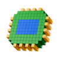

Loading spatial portfolio
Building the chronology…
The 3D archive city, hover previews and side-by-side reading are tuned for a wide screen. On mobile you'll get a stripped-down list of every project and a single-page reader. For the full thing, please open this on a laptop.

Anirudh 2009–now · 77 projectsText description goes here.